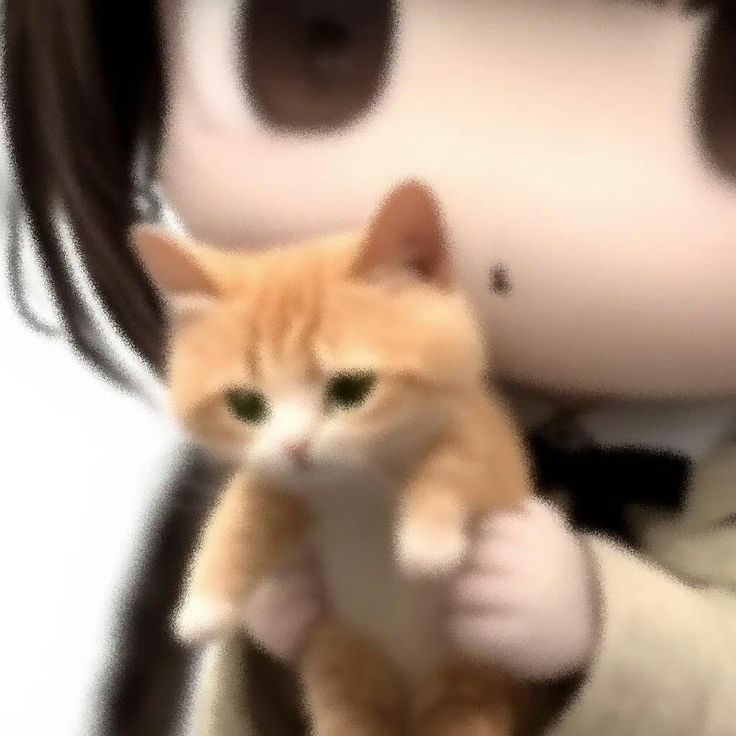
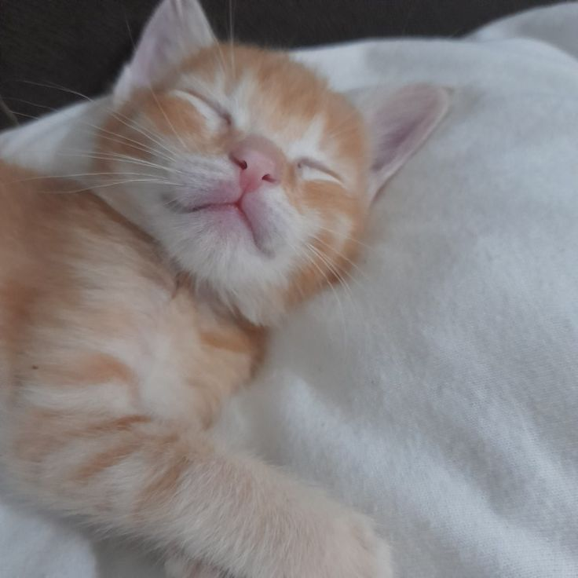
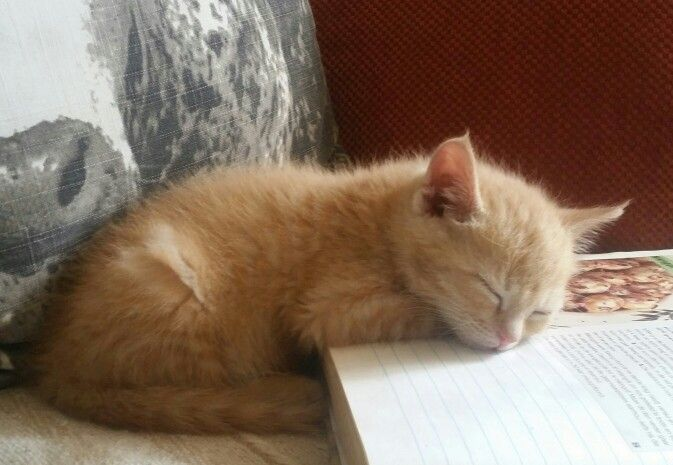
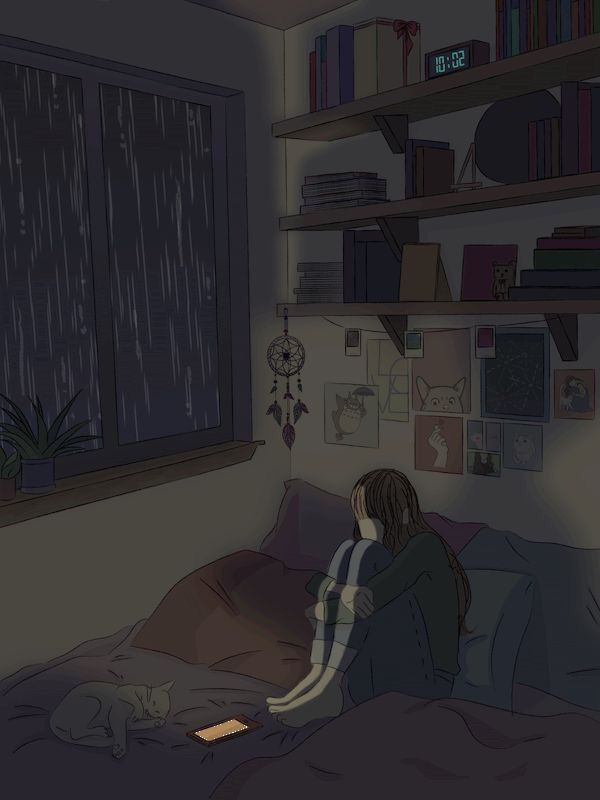

Louis He/Him˙☀︎
Date of Birth: 1st September 2022
Date of passing: 20 October 2022
{Louis and Emma were my first ever official pets.}
My very first male cat ₍^. .^₎⟆

About Him:
The calmest little boy. Quiet, nonchalant, and the complete
opposite of the chaotic orange cat stereotype—he had exactly 0
orange cat energy.
He never screamed unless he truly needed something, ate only
when he was hungry, and had the sweetest little introvert
personality. While Emma was always full of energy and drama,
Louis was peaceful, gentle, and content with simply being
close to the people he loved.
Everyone in my family adored him. There was something about
his calm little soul that made everyone fall in love with him.
And me? I loved him more than words could ever describe.
His favorite things:
Louis loved sleeping more than anything.
He loved sunbathing, cuddles, tiny kisses, and following me
around the house. But my favorite thing about him was
something he did almost every single day...
Whenever I sat down to study, he'd somehow know. No matter
where he was, the moment he saw me open my books, he'd run
over and curl up right on top of them.
I don't think he wanted me to study.
I think he just wanted me.
It used to make me laugh every single time, and even today,
whenever I open a notebook, I still think of him.
How he came into my life:
My elder cousin gave me Louis and Emma when they were only
about two months old.
They were my very first cats, so everything was new to me. I
was learning as I went, discovering what they liked, how they
communicated, and what it truly meant to care for two tiny
little lives.
They didn't just become my pets.
They made me a cat parent.
His sick days:
One early morning, I let Louis play outside.
I didn't know any better back then.
A group of street dogs attacked him.
He survived the attack, but his tiny body was badly hurt. His
back legs became paralyzed, and he couldn't even walk or do
potty properly anymore.
I made a tiny diaper for him so he could be a little more
comfortable. I wanted him to know he wasn't alone.
I took him to the vet, hoping they would tell me everything
would be okay.
Instead, they gently told me that if the paralysis didn't
improve, he probably only had a few days left. he was so lil
and took that accident to his lil heart
I kept hoping.
I kept praying.
I kept believing he'd get better.
But... he didn't.
Emma, his lil caretaker
During his final days, Emma never left his side.
She cared for him like a little mother.
She stayed close to him, comforted him, and quietly watched
over him as if she understood exactly what he was going
through.
Watching her love her brother so deeply is something I'll
never forget.
The day i lost him:
The day Louis left us, it rained so heavily.
Even now, whenever I hear rain pouring outside, my heart
remembers that day.
I still wish things had been different.
I wish I had known more.

I wish I could have protected you.If I could go back and change that morning, I would do it without thinking twice.
A letter to him:
Louis,
Thank you for making me a cat parent.
Thank you for every cuddle, every sleepy afternoon on my
books, every tiny kiss, and every quiet moment we shared
together.
You taught me that love doesn't have to be loud.
Sometimes, it looks like a tiny orange kitten peacefully
sleeping beside the person he loves.
I'm sorry I couldn't protect you the way you deserved.
But I hope you always knew one thing...
You were loved.
More than you'll ever know.
You'll always be my little Loui, my gentle little boy, and one
of the greatest pieces of my heart.
I miss you every single day.
Rest peacefully, my precious angel.
— Your beloved hooman ♡